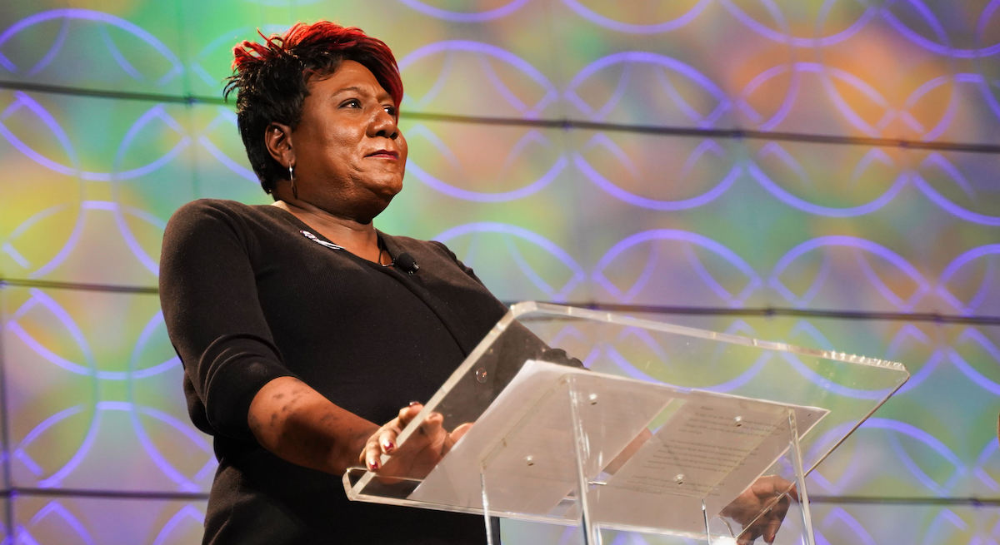

YOUR VOICE IS HEARD!
The voices of transgender youth have continuously been under and misrepresented. The mission of The Yellow Rose Initiative is to provide a platform for individuals to safely express their identity and develop a shared community among people with differing but relatable backgrounds.
The Yellow Rose Initiative is a collective of stories, joys, hardships, and breakthroughs told by trans kids for trans kids to recognize and connect with the transgender community. It is a reminder that transgender children are not alone and isolated, and that we are a safe and welcoming community to be a part of.
The Yellow Rose Initiative is a collective of stories, joys, hardships, and breakthroughs told by trans kids for trans kids to recognize and connect with the transgender community. It is a reminder that transgender children are not alone and isolated, and that we are a safe and welcoming community to be a part of.
COLLABORATORS